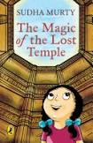
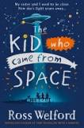

| S.no. | Name of the Comic | Author | Cost | About the book |
|---|---|---|---|---|
| 1 |  The Moth Keeper |
K. O'Neill | Rs.500 | Being a Moth Keeper is a huge responsibility and a great honor, but what happens when the new Moth Keeper decides to take a break from the moon and see the sun for the first time? A middle-grade fantasy graphic novel about passion, duty, and found family. |
| 2 |  Bell of the ball |
Mari Costa | Rs.700 | A young adult graphic novel about high school wallflower Belle Hawkins, who ends up in a love triangle after tutoring the girlfriend of her crush. |
| 3 |  Bea Wolf |
Zach Wienersmith | Rs.700 | A modern middle-grade graphic novel retelling of Beowulf, featuring a gang of troublemaking kids who must defend their tree house from a fun-hating adult who can instantly turn children into grown-ups. |
| 4 |  Batcat Book1:The Ghostly Guest(Volume1) |
Maggie Ramm | Rs.550 | A new graphic novel series for emerging readers about accepting yourself and others from up-and-coming author-illustrator Meggie Ramm |
| 5 |  Hidden Systems: Water, Electricity, the Internet, and the Secrets Behind the Systems We Use Every Day |
Dan Nott | Rs.700 | We use water, electricity, and the internet every day--but how do they actually work? And what’s the plan to keep them running for years to come? This nonfiction science graphic novel takes readers on a journey from how the most essential systems were developed to how they are implemented in our world today and how they will be used in the future. |
| S.no. | Name of the book | Author | Cost | About the book |
|---|---|---|---|---|
| 1 |  The Magic of the Lost Temple |
Sudha Murthy | Rs.234 | City girl Nooni is surprised at the pace of life in her grandparents’ village in Karnataka. But she quickly gets used to the gentle routine there and involves herself in a flurry of activities, including papad making, organizing picnics and learning to ride a cycle, with her new-found friends. Things get exciting when Nooni stumbles upon an ancient fabled stepwell right in the middle of a forest. Join the intrepid Nooni on an adventure of a lifetime in this much-awaited book by Sudha Murty that is heart-warming, charming and absolutely unputdownable. |
| 2 | Be Kind |
Pat Zietlow Miller | Rs.382 | Each act, big or small, can make a difference – or at least help a friend. |
| 3 |  The Kid who came from Space |
Ross Welford | Rs.310 | A small village in the wilds of Northumberland is rocked by the disappearance of twelve-year-old Tammy. Only her twin brother, Ethan, knows she is safe – and the extraordinary truth of where she is. It is a secret he must keep, or risk never seeing her again. |
| 4 | Cindrella: The Story of Cindrella |
Disney Book Group | Rs.430 | When Cinderella's cruel stepmother forbids her from attending the Royal Ball, she gets unexpected help from her mice friends and her Fairy Godmother. Cinderella attends the ball as a mysterious guest and dances with the prince. At the stroke of the midnight, she loses one of her glass slippers and transforms back into a maid. Will the prince ever find her now? This collectible storybook includes beautiful, full color art in the style of the beloved film, Cinderella. |
| 5 | Ali Baba and The Forty Thieves |
Antoine Galland | Rs.450 | Ali Baba is a poor woodcutter who secretly watches as 40 thieves hide their booty in a cave, the door to which can be opened only by the verbal command of “Open, Sesame!” He later uses this magic phrase, steals riches from the cave, and lives a prosperous life. |